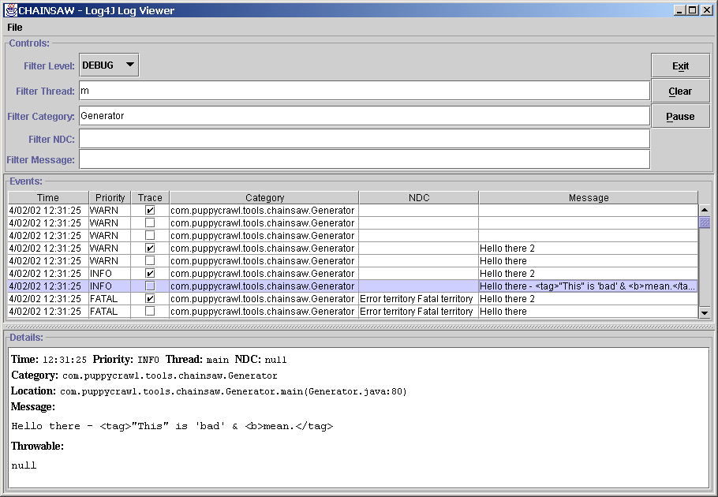

|
||||||||||
| PREV PACKAGE NEXT PACKAGE | FRAMES NO FRAMES | |||||||||
See:
Description
| Class Summary | |
|---|---|
| Main | The main application. |
Chainsaw is a GUI log viewer and filter for the log4j package. By default it listens for LoggingEvent objects sent using the SocketAppender and displays them in a table. The events can be filtered based on:
All the details for each event can be displayed by selecting the event in the table.
Chainsaw also supports loading a events logged to a file using the XMLLayout format. This is great for analysing log files, and means you do not need to keep Chainsaw running continously. It is easy to add support for loading events from other sources like JDBC.
A picture is worth a thousand words:
.
Finally, why is it called chainsaw? Because it cuts your log (file) down to size. :-)
Chainsaw is based on the Swing API which requires JDK 1.2 or later.
You need to include the log4j.jar in the classpath.
The command line usage is:
java -D<property>=<value> org.apache.log4j.chainsaw.Main
The default behaviour of chainsaw can be changed by setting system properties
using the -D<property>=<value> arguments to java. The
following table describes what properties can be set:
| Property | Description |
| chainsaw.port | Indicates which port to listen for connections on. Defaults to "4445". |
You will need to configure log4j to send logging events to
Chainsaw. Here is a sample log4j.properties file
for sending logging events to Chainsaw.
log4j.rootLogger=DEBUG, CHAINSAW_CLIENT log4j.appender.CHAINSAW_CLIENT=org.apache.log4j.net.SocketAppender log4j.appender.CHAINSAW_CLIENT.RemoteHost=localhost log4j.appender.CHAINSAW_CLIENT.Port=4445 log4j.appender.CHAINSAW_CLIENT.LocationInfo=true
|
||||||||||
| PREV PACKAGE NEXT PACKAGE | FRAMES NO FRAMES | |||||||||
{kind=link}